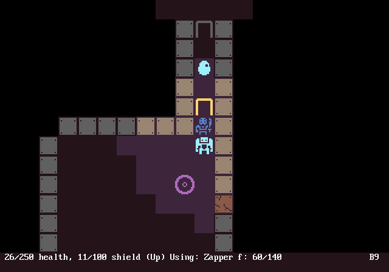

How to use graphical tiles in SadConsole
SadConsole supports graphical tiles! It's recommended that you have at least something basic drawn on-screen (eg. character, floor, walls) before adding graphics, but you can do this at any stage of development. As you can see from the screenshot, you can mix graphical tiles with regular fonts.

How graphical tiles work
If you read the basic font information article, you'll see that SadConsole uses simple png images for fonts. We can leverage this by creating a font image that uses regular graphical tiles as a spritesheet, instead of ASCII characters.
When you substitute graphics, pay attention to the positions in the font file. With an ASCII font, writing the @ glyph (index 64) on a console renders the @ image (index 64); in the spritesheet, it'll render whatever image occupies that same cell index in the spritesheet.
Creating the font spritesheet
To start out, obtain or create the images you need. You can also use the excellent 1-bit Pack by Kenney, which includes numerous high-quality sprites.
Next, create an empty spritesheet in your graphical editing software of choice. Ideally, include a grid, so you can easily distinguish tiles. Draw or copy/paste a few characters into the appropriate positions. If you're not sure which cell corresponds to which character, you can refer to the existing font files, such as the IBM_8x16.png file.
Hide the grid and export the file into your project, under the Fonts directory. Next, create the .font metadata file. Here's a sample:
{
"FilePath": "MyCustomFont_16x16.png",
"GlyphHeight": 16,
"GlyphPadding": 0,
"GlyphWidth": 16,
"Name": "MyCustomFont",
"SolidGlyphIndex": 219
}
Replace the GlyphHeight and GlyphWidth values with the pixel sizes of the cells in your spritesheet. Make sure the FilePath value is the name of the spritesheet PNG.
There are two special requirements for your spritesheet:
The
SolidGlyphIndexsetting in your font definition file must point to an index in your spritesheet that is completely filled with the color white. This is used for background coloring of cells.Index 0 (the first cell) in your spritesheet must be completely transparent. this is used to create empty cells.
Using the spritesheet Font
Somewhere in your game constructor, load the font:
SadConsole.Global.LoadFont("Fonts/MyCustomFont.font");
This loads the font and caches it in the Global.Fonts collection with the name MyCustomFont. You can then load it by adding this code to your console:
var normalSizedFont = SadConsole.Global.Fonts["MyCustomFont"].GetFont(SadConsole.Font.FontSizes.One);
this.Font = normalSizedFont;
You're done! Any calls to SetGlyph will use the image from your custom font spritesheet. You can also change the enumeration value of SadConsole.Font.FontSizes to a different value (eg. Two or Quarter) to zoom your game in/out or to render at a different size than the sprite image size.
Since SadConsole limits you to one font per console, you need to create sub-consoles for anything you want to render normally, such as a status bar, sub-menu, etc.
Coloring sprites
To color your sprites, simply specify a Color in your SetGlyph calls. By default, your font image uses white, so your images will render white. If you specify a color to SetGlyph, SadConsole will multiply that color by the spritesheet color when it draws.
You can use this for effects; just be aware that drawing pixels in your spritesheet in a color other than white, will restrict what colors they can appear with in-game.
If you prefer full-color sprites instead, simply colour them as desired within the spritesheet, and always render them as white when you call SetGlyph. They will appear exactly as they do in the spritesheet, colors and all.